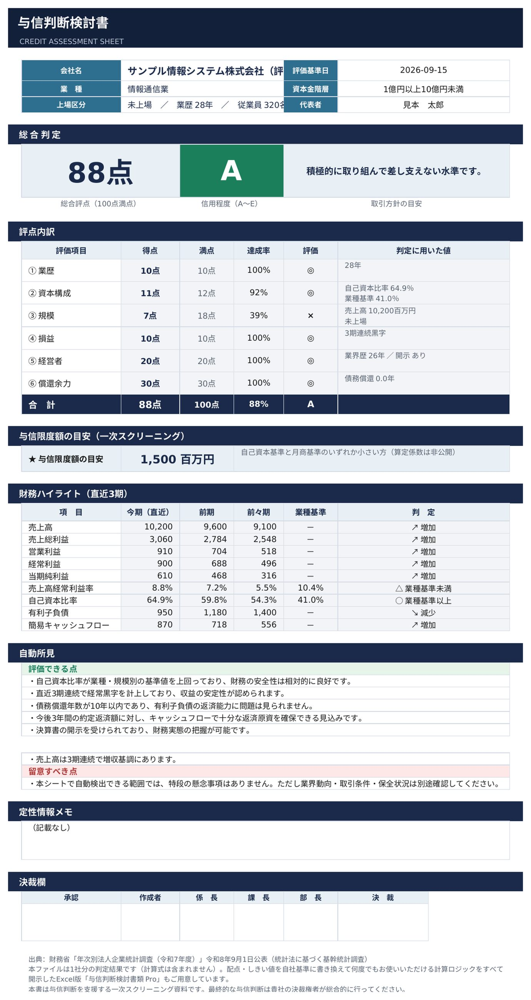

財務でポン！
決算書を入れるだけで、財務分析と与信判定
決算書のPDFを置くだけで、自動分析してExcel形式で出力。取引先の信用力を6軸100点満点で判定し、稟議にそのまま添付できるレポートを作成します。信用程度A〜E、与信限度額の目安、主要財務指標14種まで自動で計算します。
ファイルはブラウザの中だけで処理され、どこにも送信されません。
PDFを置くだけで、分析完了。
決算書のPDFをドラッグ＆ドロップ。それだけで、財務分析と与信判定が7つの図になって出てきます。
切り替えて見比べてください。図の上にマウスを乗せると、その数字の意味が出ます。
受け取れるもの
Excelでは、もう一段くわしく見られます
500円 ／ 1社
上でご覧いただいた7つの図は、そのままダッシュボードになります。 そのうえでExcelには、3期比較の主要指標14種、償還余力の算定過程、100点の配点根拠と、 画面には出していない数字が並びます。決裁欄つきで、稟議にそのまま添付できる6シート構成です。

架空の会社の数値です。実際に受け取るものとまったく同じ手順で作っています。
決算書PDFを置く
計算書類・有価証券報告書・決算短信に対応しています。会社名・決算期・金額の単位も自動で読み取ります。
別の会社の決算書が混ざると、判定結果は意味を持ちません。会社名が食い違う場合は画面上で警告し、判定できないようにしています。
ここにドラッグ＆ドロップ
クリックしてファイルを選ぶこともできます
複数ファイルを一度に選べます。追加で置くと、すでに読み取った期に積み上がります。
決算書PDFが手元に無い場合、または読み取れない決算書の場合は、こともできます。
別の会社を判定する場合や、読み取り結果がおかしい場合は、
読み取った内容
すべての項目を確認・入力する
会社の基本情報・代表者情報・返済計画は決算書PDFに載っていないため、必ずご入力ください。ここまで埋めてから、いちばん下の「この内容で判定する」を押してください。
金額の単位
入力欄・判定結果・Excelのすべてに反映されます。決算書PDFを読み込むと、その決算書の単位に自動で合わせます。いつ切り替えても数値は変わりません。
会社の基本情報
業種と資本金階層は、判定に使う業界基準値の選択に使います。
会社名は必ずご確認ください。判定結果とExcelにそのまま印字されます。
代表者情報
経営者の評価は20点。決算書の開示姿勢がそのうち14点を占めます。
借入金の返済計画（今後3年）
単位は百万円。当座貸越や短期継続融資の折返し分は含めないでください。
貸借対照表（直近3期）
単位は百万円。いちばん下の【検算】が0にならない場合は入力に誤りがあります。
損益計算書（直近3期）
単位は百万円。売上総利益・営業利益・経常利益・当期純利益は自動で計算されます。
定性情報メモ
取引の経緯、業界動向、面談での所感など。判定結果と一緒に出力されます。
判定結果
判定結果・7つの図・Excelは、まとめて1社500円です。読み取った内容の確認までは無料でお使いいただけます。
結果とExcelを受け取る
| お渡しするもの | 画面の判定結果と7つの図（①〜⑦）／この判定結果のExcelファイル（6シート・ダッシュボード付き・1社分） |
|---|---|
| 価格 | 500円（税込） 1社分につき |
| ご利用の範囲 | 1回のお支払いにつき1社分です。お支払い後24時間は、
この1社の判定結果・7つの図・Excelを何度でも取り直せます。 お支払いのあとで別の会社の決算書を読み込んでも、画面に出る判定結果とダウンロードされるExcelは、お支払い時の会社のままです。 読み込んだ数字は画面に残りますが、その判定結果はご覧いただけません。 別の会社を判定するには、あらためてお求めください。 |
| お支払い | クレジットカード・PayPay・Apple Pay・Google Pay（Stripe） |
| 受け取り | 決済後この画面に戻り、その場でダウンロード |
デジタルコンテンツの性質上、お客様のご都合による購入後のキャンセル・返金はお受けできません。尚、ファイルが破損している、記載内容が本ページの説明と異なるなどといった不具合が生じた場合はこの限りではありません。スクリーンショットなどエラーが確認できるものをご準備のうえ、お問い合わせフォームよりご連絡ください。（特定商取引法に基づく表記）
入力した内容はこの画面に残ります。決済後、同じ内容のまま続けてダウンロードできます。
決済したのに解錠されない場合は、 （決済の画面を途中で閉じた場合なども、ここから確かめ直せます）
別の会社を判定するには、もう一度お求めください
お支払いは1回につき1社分です。この端末には、前にお支払いいただいた会社の控えが残っています。 いま読み取った会社を判定するには、前の会社の控えを消してから、あらためてお求めください。
消えるのは、この端末に残っている前の会社の購入情報と判定結果だけです。 いま画面に読み取っている決算書の数字は消えません。
ご購入ありがとうございます。この画面を開いている間、何度でもダウンロードできます。
購入状況を確認しています…
このダウンロードは、お支払い時に判定した1社分です。 24時間のあいだは、この画面を閉じても同じ会社の分を取り直せます。別の会社の決算書を読み込んだあとでも、 出てくるファイルはお支払い時の会社のままです。
このファイルは、1社分の判定結果を記録したものです。計算式は含まれません。 配点やしきい値をご自身の与信方針に合わせて書き換えながら、何社でも繰り返しお使いになりたい方には、 計算ロジックをすべて開示したExcel版をご用意しています。 6カテゴリの配点表、業種別のしきい値、償還余力の算定過程まで、数式のまま追えるものです。
このツールは何をするものか
取引先の決算書を3期分入力すると、その会社の信用力を100点満点で評価し、信用程度をA〜Eの5段階で判定します。あわせて、与信限度額の目安、直近3期の財務指標、そして稟議書にそのまま添付できる形式のレポートを作成します。
与信判断でいちばん厄介なのは、決算書が読めないことではありません。読んだあと、その数字を「判断」に変換するものさしがないことです。自己資本比率が42パーセントという数字を見ても、それが高いのか低いのかは、比べる相手がいなければ決まりません。同じ42パーセントでも、製造業の大企業なら平均以下ですし、非製造業の小規模企業なら平均を大きく上回ります。
このツールは、その「比べる相手」を財務省の統計から自動で持ってきます。そして6つの観点から点数をつけ、なぜその点数になったのかを説明できる形で示します。根拠を説明できない評点は、稟議では使えないからです。
6つの評価軸
財務分析ツールの多くは「自己資本比率が高い会社は優良」といった単純な見方に偏りがちです。しかし実際の与信判断はそれだけでは足りません。財務が薄くても経営者の手腕で回している会社はありますし、数字は整っていてもキャッシュが詰まりかけている会社もあります。
そこで、実務で見られている観点を次の6つに整理しました。
① 業歴（2〜10点） 創業からの経過年数です。長く続いていること自体が、環境変化を乗り越えてきた証拠になります。
② 資本構成（0〜12点） 自己資本比率を、業種と企業規模の両方で補正した基準値と比較します。ここが本ツールの中核です。詳しくは後述します。
③ 規模（2〜18点） 売上高、年商、上場区分、従業員数から総合的に評価します。ただし規模だけでは高得点になりません。中堅・中小企業でも、財務内容と返済能力が伴っていれば正当に評価される配点にしています。
④ 損益（0〜10点） 直近3期の経常損益から、黒字・赤字の継続性と利益水準を評価します。単純な黒字年数のカウントではなく、直近期の状況を重く見ています。3期前が黒字でも今期が赤字なら、警戒すべきなのは今期のほうだからです。
⑤ 経営者（0〜20点） 業界経験年数、代表取締役としての在任年数、資産背景、そして決算書の開示姿勢を評価します。特に決算書が出てこない相手は、財務実態そのものが確認できません。これは与信判断における最大のリスク要因なので、配点を厚くしています。
⑥ 償還余力（0〜30点） 最大配点です。与信の本質は、突き詰めれば「返ってくるか」に尽きます。ここだけは詳しく説明します。
なぜ償還余力に30点を置いたのか
売掛でも融資でも、相手に信用を供与するということは、後で返ってくることを前提にお金や商品を先に渡すということです。であれば、いちばん重く見るべきは返済能力です。
ただし、有利子負債を利益で単純に割るような計算はしていません。実務では次のように考えます。
まず、手元の現預金は、いざとなれば返済に充てられます。次に、売上債権と棚卸資産から仕入債務を引いた正常運転資金は、事業を回し続けるために必ず必要なお金であり、これを返済に充てることはできません。この2つを有利子負債から差し引いて、はじめて「本当に返さなければならない借金」が見えてきます。
その返済に充てられる原資は、税引後の当期純利益に減価償却費を足し戻した金額です。減価償却費は現金の支出を伴わない費用なので、その分は手元に残っているからです。
この考え方で計算した債務償還年数に加えて、今後3年間の約定返済額をキャッシュフローで賄いきれるかも見ます。前者だけでは、返済がこれから重くなる会社を見逃します。後者だけでは、いま借金が重い会社を見逃します。両方を見て、はじめて返済能力の判断ができます。
比較の基準をどこに置いているか
比較の基準をどこに置くかで、判定の信頼性はほとんど決まります。ここは慎重に選びました。
採用したのは、財務省の法人企業統計調査です。統計法に基づく基幹統計調査で、昭和23年から続いており、毎年9月に前年度の確定計数が公表されます。民間のデータベースのように、ある日サービスが終了したり定義が変わったりする心配がありません。社内資料の根拠として提示したときに、出典を説明できることも重要です。
業種を選ぶと、その業種の売上高経常利益率と売上高営業利益率が自動で呼び出され、入力した会社の実績値と突き合わされます。
さらに、自己資本比率については業種と企業規模の両方を踏まえた基準値を用いています。自己資本比率は、業種の違いよりも会社の大きさの違いのほうが強く効く指標だからです。統計を見ても、業種の間の差より、資本金階層の間の差のほうが明確に大きく出ます。
業種平均だけで比較すると、小規模な会社が構造的に不利な評価を受けてしまいます。売上5億円の製造業を、上場企業を含む業界全体の平均と並べても意味がありません。この補正を入れているかどうかで、判定の質は大きく変わります。
判定結果の読み方
総合評点は100点満点、信用程度はA〜Eの5段階です。ただし、点数そのものよりどこで点を落としているかを見てください。
たとえば、赤字なのに総合点が高く出ることがあります。これは規模と経営者評価が効いているためで、ツールの誤りではありません。そういうときは、資本構成・損益・償還余力の3項目を個別に確認してください。この3つが与信判断の核心です。逆にこの3つが崩れていれば、他の項目が高くても総合評価は落ちる設計になっています。
与信限度額の目安は、自己資本を基準にした金額と月商を基準にした金額のうち、小さいほうを採用しています。あくまで一次スクリーニングの出発点であり、実際の限度額は保全状況、取引実績、業界動向を踏まえて決裁権者が判断するものです。
自動所見は、該当する項目だけが日本語の文章として出てきます。稟議書の所見欄にそのまま書き写せる文体にしてあります。
入力するときの注意
貸借対照表の検算を0にしてください。資産合計と負債・純資産合計が一致していないと、財務指標がすべて狂います。ズレているとその行が赤くなるので、必ず確認してください。
減価償却費は、販売費及び一般管理費に計上した分と、製造原価に計上した分の合計を入力してください。製造業では製造原価に入っている分がかなり大きいことがあり、忘れるとキャッシュフローが小さく出ます。損益計算書に単独の行がない場合は、製造原価明細書や販管費明細を確認してください。
返済計画には、当座貸越や短期継続融資の折返し分を含めないでください。実質的に返済していない資金を入れると、返済負担が過大に計算されます。
決算書が2期分しかない場合は、存在しない期を0のままにしておいて構いません。ただし損益の評価が低めに出るので、稟議書に事情を一行添えてください。
純資産がマイナス（債務超過）の場合は、資本構成が自動的に0点となり、与信限度額の目安もゼロになります。
IFRSを採用している企業の場合
国際会計基準（IFRS）には経常利益という科目がありません。その場合は次のように読み替えて入力してください。
営業外収益には「その他の収益」「持分法による投資利益」「金融収益」の合計を、営業外費用には「その他の費用」「金融費用」の合計を入れます。こうすると、自動計算される経常利益がIFRSの「税引前利益」と一致します。使用権資産は有形固定資産に、リース負債は有利子負債（短期借入金・長期借入金）に含めてください。
入力内容は送信されません
このページの計算はすべて、お使いのブラウザの中だけで行われます。入力した会社名や決算数値がサーバーへ送られることはなく、運営者がそれを見ることもできません。Excelファイルの作成も、ブラウザ上で行われます。
取引先の決算書は、社外に出したくない情報の代表格です。だからこそ、送らずに済む作りにしています。
出典・準拠時点・免責
業界基準値の出典 財務省「年次別法人企業統計調査（令和7年度）」令和8年9月1日公表（統計法に基づく基幹統計調査）。売上高利益率および自己資本比率の公表計数を用いています。
準拠時点 令和7年度確定計数。基準値は統計の更新状況を踏まえて見直します。最新の公表内容は財務省の該当ページをご確認ください。
免責 本ツールは与信判断を支援する一次スクリーニングツールです。算出される評点・信用程度・与信限度額の目安は判断材料の一つであり、特定の取引や与信の可否を保証・推奨するものではありません。最終的な与信判断は、信用調査報告書・面談内容・業界動向・保全状況等を踏まえ、貴社の決裁権者が総合的に行ってください。本ツールの利用により生じたいかなる損害についても、作成者は責任を負いかねます。
本ツールは中小企業から中堅企業の与信判断を主な想定として設計しています。金融業・保険業は法人企業統計調査の対象外です。
関連するツールと記事
- 与信判定シミュレーター（無料・1期版） 直近1期だけで、4軸60点のかんたん判定ができます。まずはこちらで感触をつかむのもおすすめです。
- 決算書のどこを見て与信を判断するか このツールが見ている観点を、決算書の読み方として解説しています。
- 粉飾の兆候は数字のどこに出るか 数字が実態と乖離しているとき、どこに歪みが出るのかをまとめています。
- 損益分岐点シミュレーター 相手の収益構造を、固定費と変動費の面から確かめたいときに。